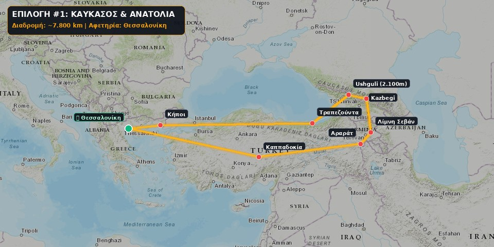
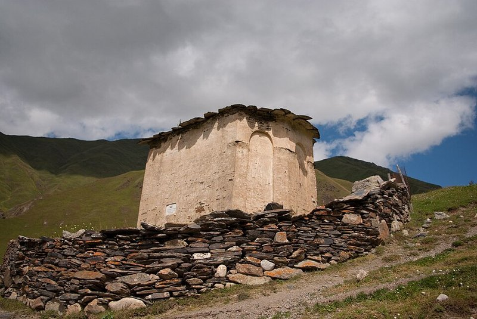
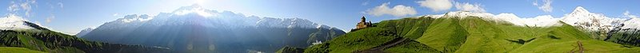
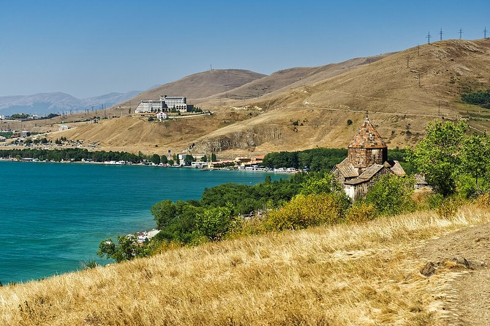
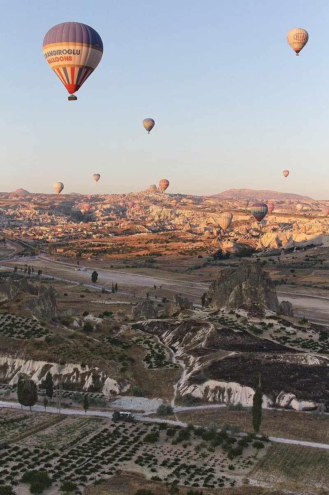

👑 Επιλογη #1 — Κορυφαια Συσταση
Καύκασος & Ανατολία
Τουρκία • Γεωργία • Αρμενία
10/10
Adventure Score
Η απόλυτη μοτοσυκλετιστική αποστολή που ξεκινά μόλις 3.5 ώρες από τη Θεσσαλονίκη. Διασχίζει τα καταπράσινα Ποντιακά Όρη, ανεβαίνει στις 5.000m του Καυκάσου στο μυθικό Svaneti (Ushguli) και το Kazbegi, διασχίζει τα ηφαιστειακά υψίπεδα της Αρμενίας (Λίμνη Σεβάν, Tatev), αντικρίζει το όρος Αραράτ και ολοκληρώνεται στα σεληνιακά φαράγγια της Καππαδοκίας.
🗺️ Χαρτης Διαδρομης & Σταθμοι (Κλικ για μεγεθυνση)

📸 Σημεια & Τοπια της Διαδρομης

Ushguli & Svaneti (2.100m, Γεωργία)

Στρατιωτική Οδός Καυκάσου & Gergeti (Γεωργία)

Λίμνη Σεβάν & Sevanavank (Αρμενία)

Καππαδοκία & Göreme (Τουρκία)
▶ Bίντεο Διαδρομής (English / Africa Twin)
With the Africa Twin in the Caucasus || Ushguli & Zagari Pass (Georgia)
🌟 Δυνατά Σημεία
- Ushguli & Svaneti: Το ψηλότερο μόνιμο χωριό της Ευρώπης κάτω από παγετώνες 5.000m.
- Στρατιωτική Οδός Καυκάσου & Μοναστήρι Gergeti στο Kazbegi.
- Το επιβλητικό Όρος Αραράτ (5.137m) και το Παλάτι Ισχάκ Πασά.
- Καππαδοκία: Σεληνιακά τοπία, υπόγειες πολιτείες και πτήσεις αεροστάτων.
👍 Υπέρ
- 0% χαμένα χιλιόμετρα: Περιπέτεια από την πρώτη κιόλας ημέρα στα σύνορα των Κήπων.
- Απίστευτη εναλλαγή τοπίων: Πράσινος Πόντος, άγριες κορυφές, ηφαίστεια, στέπες.
- Χαλαρή οδική κουλτούρα, μηδέν άγχος για κάμερες και αυστηρά όρια.
- Πολύ χαμηλό κόστος διαμονής και φαγητού, ελεύθερη είσοδος χωρίς βίζα.
👎 Κατά
- Συνοριακές διατυπώσεις (μπορεί να πάρουν 1–2 ώρες στα σύνορα Τουρκίας-Γεωργίας).
- Απαιτεί πράσινη κάρτα ασφάλισης (στη Γεωργία/Αρμενία αγοράζεται τοπικά στα σύνορα).
- Απαιτείται στοιχειώδης προσοχή στην οδηγική συμπεριφορά των ντόπιων στις πόλεις.
⚡ Δυσκολίες & Προκλήσεις
- Ορεινά περάσματα άνω των 2.500m με απότομες καιρικές αλλαγές (ομίχλη, καταιγίδες).
- Βατά χωμάτινα κομμάτια προς Ushguli που θέλουν προσοχή αν βρέξει (λάσπη).
- Αδέσποτα ζώα (αγελάδες, άλογα) που ξαπλώνουν πάνω στην άσφαλτο στις ορεινές στροφές.
Ταίριασμα με Transalp & Africa Twin: Απόλυτο 10/10. Οι 21" τροχοί «ισιώνουν» τις λακκούβες και τα χωμάτινα περάσματα. Οι ταχύτητες 60–100 km/h κρατούν το RD07A ξεκούραστο, ενώ το Transalp απολαμβάνει τα στριφτερά ορεινά πάσα.